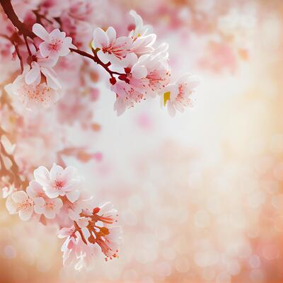
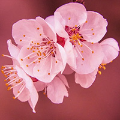

Florecitas
La floración de los cerezos japoneses o Sakura es todo un acontecimiento natural conocido y apreciado en todo el planeta.

De
La flor del cerezo es un símbolo del renacer, de la propia vida y de su belleza.

Cerezo
Cuando los primeros cerezos empiezan a abrir sus flores significa que falta poco para el final del invierno. A este momento se le conoce como Kaika y suele anunciarse e incluirse en las previsiones meteorológicas de Japón.